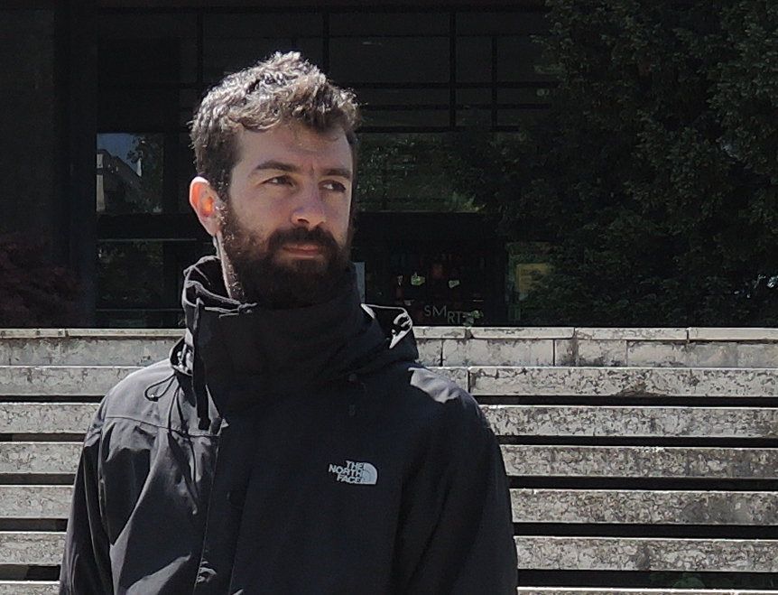
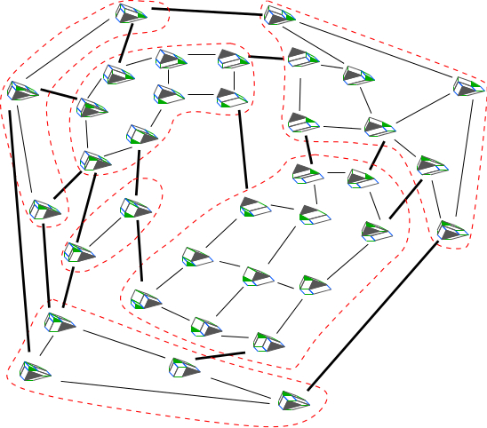
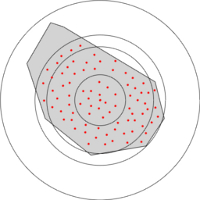

Short bio
- I am a senior software engineer at Oracle, working on development of geometric algorithms for GIS in Boost.Geometry to support MySQL.
- I also collaborate with the Laboratory of Geometric and Algebraic Algorithms of University of Athens on research projects regarding geometric computing and optimization.
- Previously, I was a postdoc researcher at Algorithms Research Group in Université libre de Bruxelles (ULB) working with Prof. Samuel Fiorini. Before that I was a visiting researcher at National Institute for Mathematical Sciences in South Korea.
- I hold a Phd in Computer Science, from University of Athens supervised by Prof. Ioannis Emiris. Also, a M.Sc. in Logic, Algorithms and Computation, from University of Athens. My diploma (5-year degree) is in Computer Engineering & Computer Science from CEID, University of Patras.
Scientific profile
- Development and analysis of new algorithms and software.
- Strong background in geometric optimization, (high-dimensional) computational geometry, polyhedral combinatorics and computation as well as in algorithm engineering, generic programming, scientific computing & libraries, randomized computation.
- Research interests in the design, analysis and implementation of algorithms for the computation of large, complex, geometric structures and data that arise in scientific and technological areas (GIS, CAD, biology) or in the theory of computation (polynomial systems solving, combinatorial optimization).
- Examples of work:  
- For more details: my CV.